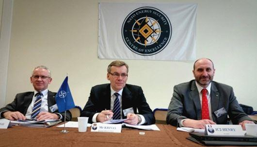

Depuis plus de vingt ans, les Etats-Unis poussent à « globaliser » l’Alliance, au motif qu’elle doit s’adapter aux nouveaux risques et menaces si elle veut, soi-disant, « rester pertinente » (en d’autres termes : prouver son utilité pour les intérêts américains et s’assurer, en échange, le maintien de l’engagement US sur le vieux continent). Le raisonnement est, somme toute, logique. Sauf que pour les Européens il aboutirait mécaniquement à abandonner toutes leurs politiques. Le défi consiste à empêcher, autant que faire se peut, que le champ de compétences de l’organisation s’étende à d’autres domaines (non-militaires) et à d’autres zones géographiques (au-delà de l’espace euro-atlantique). Car l’objectif des efforts de « globalisation » est de faire en sorte que les Européens – qui dans l’OTAN se trouvent dans une position de subordination par rapport à l’Amérique – formulent leurs politiques diverses et variées non plus en dehors, mais au sein de l’Alliance atlantique.
L’expérience montre que cela met une formidable pression sur les alliés pour épouser les priorités US, reprendre leurs arguments, leur approche, leurs normes et, au bout du compte, délaisser leurs propres analyses et modes de réflexion. Pour les Européens, la poursuite de l’extension du champ de compétences fonctionnelles et géographiques de l’OTAN risque de mettre définitivement leurs politiques dans des domaines tels le cyber, l’énergie, l’espace, et vis-à-vis de puissances comme la Russie, la Chine ou le Moyen-Orient sur une trajectoire fixée par les USA. Leur marge de manœuvre s’en trouverait singulièrement rétrécie, avec des répercussions désastreuses à la fois en matière diplomatique et économique.
La France a flairé le danger très tôt. Face à la tentation d’élargir à l’infini les compétences de l’OTAN (et de grignoter sur celles de l’UE par voie de conséquence), elle ne cesse de plaider pour un « recentrage » de l’Alliance.
Le ministère de la défense a expliqué dès 2007 que les clins d’œil de l’OTAN vers des secteurs civils, ou en direction de pays partenaires en Asie et en Océanie dénotent « un changement de nature de l’Alliance » et « visent, sous l'impulsion des États-Unis, à transformer l'OTAN en une organisation de sécurité à vocation globale, tant géographique que fonctionnelle ». Or pour la France « l'OTAN ne doit pas devenir une organisation englobant des compétences disparates qui n'auraient plus aucun lien avec son cœur de métier ».[1] Dans le même esprit, le ministre Le Drian s’exprimant en 2014 à un séminaire de l’OTAN a plaidé pour « concentrer l’Alliance sur son domaine d’excellence ».[2]
Extension géographique : démultiplication à la fois des partenaires et des cibles
Face aux efforts sans relâche de la bureaucratie otanienne pour se conformer au plus près des injonctions US (avec l’acquiescement discret de la plupart des partenaires), les appels français au « recentrage » ont l’air d’un combat d’arrière-garde. La perte du focus euro-atlantique, à savoir le fait que l’établissement de partenariats et la désignation des adversaires se produit désormais à l’échelle globale, s’inscrit dans la grande mutation post-guerre froide. Comme l’a résumé l’excellent Jolyon Howorth « à partir d’une organisation dont l’objectif initial fut d’assurer un engagement américain au service de la sécurité européenne, [l’OTAN] a été transformée, presque imperceptiblement, en une autre, dont le nouvel objectif est d’assurer un engagement européen au service de la stratégie globale des Etats-Unis ».[3]
Pour les Européens, cette évolution amplifie deux sortes de risques : militaires et diplomatiques. Le général de Gaulle avait déjà mis en garde sur le danger de se retrouver entraîné dans les aventures militaires des Etats-Unis. « D'abord, on a vu que les possibilités de conflit, et par conséquent d'opérations militaires, s'étendaient bien au-delà de l'Europe, et qu'à leur sujet il y avait entre les principaux participants de l'Alliance atlantique des divergences politiques qui pourraient, le cas échéant, tourner en divergences stratégiques ».[4] Or « des conflits où l'Amérique s'engage dans d'autres parties du monde, risquent de prendre, en vertu de la fameuse escalade, une extension telle qu'il pourrait en sortir une conflagration générale. Dans ce cas, l'Europe, dont la stratégie est, dans l'OTAN, celle de l'Amérique, serait automatiquement impliquée dans la lutte lors même qu'elle ne l'aurait pas voulu ».[5]
Avec la fin de la guerre froide, les divergences politiques d’un côté et de l’autre de l’Atlantique se multiplient et se manifestent de plus en plus ouvertement, d’abord sur le plan diplomatique. C’est le fameux « policy gap » : les intérêts des Européens et des Américains ne coïncident pas, loin de là, sur de nombreux dossiers, qu’il s’agisse de la Russie, de la Syrie, de l’Iran, du Proche-Orient, de l’Arctique, de la Chine ou de l’Afrique. Accepter de formuler ces politiques au sein de l’OTAN, donc sous la tutelle de l’Amérique, c’est accepter de verrouiller les relations de l’Europe vis-à-vis d’autres puissances et d’autres régions du globe dans une position de suivisme et d’alignement sur les Etats-Unis. Comme l’a dit, avec un euphémisme remarquable, le ministre français de la défense en 1999 : « Il est incontestable que l'Alliance n'est pas nécessairement l'entité la mieux à même d'assurer à l'Europe une voix plus puissante dans les affaires du monde »[6]
(Crédit photo: OTAN)
Pour ce qui est de la propension de l’OTAN à établir des partenariats à tout va, le concept semble innocent au premier regard – mais n’en comporte pas moins des dangers graves. La diplomatie française a toujours été réservée par rapport aux projets de « partenariat global » qui est, en réalité, l’association aux travaux de l’OTAN de pays géographiquement éloignés de l’espace euro-atlantique, mais qui se distinguent par leur loyauté envers les Etats-Unis. Il s’agit de 42 pays aujourd’hui, y compris le Japon et l’Australie, 5 ayant accès à des informations confidentielles de l’Alliance (dont la Jordanie et la Géorgie).
Les réticences traditionnelles de la France s’expliquent d’abord par le refus d’instituer une sorte de grande « alliance des démocraties ». Laquelle aurait, d’une part, la vocation à peine cachée de se substituer à l’ONU, et qui établirait, de l’autre, une logique de bloc à bloc entre l’Occident et le reste du monde. A l’époque, la ministre Michèle Alliot-Marie, dénonça le risque « d’adresser un mauvais message politique : celui d’une campagne à l’initiative des Occidentaux contre ceux qui ne partagent pas nos opinions ».[7]
En effet, l’élargissement continu du réseau de partenariats s’inscrit dans une logique d’extension des adversaires et des théâtres d’opérations potentiels. Ce n’est pas un hasard si en signant un accord de partenariat renforcé avec l’Australie le Secrétaire général de l’Alliance a tenu à préciser que le but est de gérer/contrer la montée en puissance de la Chine.[8] En janvier dernier, dans la revue Foreign Policy fut publié un article signé de Stephen M. Walt, un de théoriciens les plus reconnus des relations internationales, où il a écrit noir sur blanc que pour sauver l’OTAN « les Européens doivent devenir l’ennemi de la Chine ».[9] Ou de n’importe qui d’autre que les Etats-Unis nomment comme étant leur principal adversaire du moment. Car c’est toujours la même logique : pour s’assurer les bonnes grâces de Washington et sous prétexte de « sauver » l’Alliance, les Européens sont priés d’aligner leurs politiques sur celles des Etats-Unis. Il va sans dire que l’OTAN est l’enceinte tout trouvée pour faire ce travail de « coordination » entre alliés.
Extension fonctionnelle : de la politique intérieure à l’espace extra-atmosphérique
De façon régulière, les responsables américains lancent aussi des « défis » thématiques à l’OTAN pour qu’elle prouve son utilité et sa pertinence. Comme le président Trump qui l’a traitée « d’obsolète » à moins qu’elle ne devienne plus active dans la lutte contre le terrorisme. Dans le même esprit, on assiste, depuis le début des années 2000, à une extension tous azimuts des domaines de compétence de l’Alliance. L’accent a été mis sur l’énergie et le cyber, mais la liste des domaines possibles est pratiquement sans fin – comme l’a dit Jaap de Hoop Scheffer, Secrétaire général de l’Alliance en 2006 : « virtuellement tous les problèmes sociétaux peuvent rapidement se transformer en un défi de sécurité ».[10] Et ça tombe bien, puisque, pour Washington, il convient surtout de réduire au minimum le nombre de sujets sur lesquels les Européens se concertent entre eux (dans le cadre de l’UE), hors de son contrôle direct. Car un des grands avantages, pour les USA, de l’élargissement du champ des compétences de l’OTAN est de bloquer/récupérer les initiatives de l’UE dans les domaines qui les intéressent.
Le scénario est toujours le même. Un sujet est projeté, sur initiative US, sur l’écran radar de l’Alliance. Les Européens, Français en tête, rechignent, en disant que l’OTAN devrait se concentrer sur son cœur de métier, et ne pas s’aventurer sur le terrain de l’UE. Toutefois, comme c’est déjà sur l’agenda, les alliés lancent des consultations. Ils en arriveront à accepter l’inclusion du nouveau sujet parmi les compétences de l’Alliance, d’une façon soigneusement circonscrite dans un premier temps. La nouvelle compétence se limite d’abord à la protection des capacités propres (infrastructures, forces en opération) de l’OTAN. Ensuite, au prétexte de la « valeur ajoutée » de l’Alliance, celle-ci se propose d’épauler tel ou tel Etat membre. Le sujet finira par se faufiler dans les planifications de défense, où la définition d’une « approche coordonnée » se fera, tout naturellement, sur la base des priorités des Etats-Unis. Cerise sur le gâteau, des voix s’élèveront pour que le nouveau domaine figure parmi ceux couvert par l’article 5. C’est ainsi que le Secrétaire général Stoltenberg a pu énoncer, en août dernier, qu’une attaque cyber contre les ordinateurs du Système de santé britannique serait susceptible de déclencher la défense collective.[11]
La sécurité énergétique est un autre cas d’école. En 2006, au sommet de Riga, le président Chirac a sèchement remarqué que « La sécurité énergétique n’était pas à l’ordre du jour et n’avait pas à être à l’ordre du jour de l’OTAN. Nous n’en avons donc pas parlé ».[12] Il n’en reste pas moins qu’à la suite du sommet, des « consultations » furent lancées.
La Division des défis de sécurité émergents comporte, dès 2010, une section dédiée à la sécurité énergétique, et deux ans plus tard un centre d’excellence « Sécurité énergétique de l’OTAN » a été mis sur pied. [13] Au sommet de Bruxelles de juillet 2018, les dirigeants alliés, soucieux d’apaiser le président Trump, ont déclaré que « les développements en matière d'énergie peuvent avoir des incidences importantes sur les plans politique et de la sécurité pour les Alliés », et que, pour cette raison, « Nous estimons qu’il est essentiel de veiller à ce que les pays membres de l’Alliance ne soient pas vulnérables à la manipulation des ressources énergétiques à des fins politiques ou de coercition, laquelle constitue une menace potentielle. Les Alliés continueront donc de chercher à diversifier leurs approvisionnements énergétiques. »[14] Ce n’est qu’une heureuse coïncidence si, pour beaucoup, cela revient à acheter du gaz naturel liquéfié, en provenance des Etats-Unis.[15]
L’espace est le prochain sur la liste. L’argumentaire est bien rodé, exposé il y a deux ans dans un rapport de l’Assemblée parlementaire de l’OTAN : « toute attaque sur les moyens spatiaux d’un Allié aurait des retombées sur la sécurité de tous les autres. Il lui faut donc se doter d’une approche globale qui lui permette de protéger ses intérêts dans l’espace. Il est par ailleurs indispensable, du point de vue opérationnel, d’intégrer l’espace aux structures OTAN de planification et de commandement. Enfin, les exercices de l’OTAN devraient comporter des scénarios de guerre spatiale prévoyant l’interdiction ou la désactivation temporaire de moyens spatiaux alliés ».[16] Une des décisions attendues au sommet de Londres en décembre prochain est justement la reconnaissance officielle de l’espace comme domaine de compétence et d’intervention pour l’OTAN.[17] Si elle est conçue comme « un cadeau à Trump » (une fois de plus, le fameux apaisement), elle n’en est pas moins lourde de conséquences. La France, en particulier, veut des assurances en matière de commandement (ses capacités spatiales seront-elles placées sous commandement OTAN/US dans une situation de crise) et sur l’articulation avec l’article 5 (une attaque contre le satellite d’un des pays membres serait-il susceptible d’activer la défense collective). Mais elle passe, une fois de plus, à côté de l’essentiel : dès que le spatial aura été reconnu comme domaine OTAN, c’est tout un engrenage qui se mettra en place. Un processus au cours duquel les Européens seront amenés à se conformer à la vision, aux normes, aux priorités de l’Amérique dans l’espace.
A moyen et à long terme, l’Alliance atlantique pourra être tentée de s’aventurer davantage sur le terrain du commerce et de l’économie (le Secrétaire général de l’OTAN n’a-t-il pas parlé du TTIP comme d’une OTAN économique, en soulignant que ce sont les deux faces de la « communauté transatlantique intégrée » à construire), voire sur celui de la politique intérieure de ses propres Etats membres (sauf le plus grand, tout naturellement) [18-19]. L’un des meilleurs spécialistes US de l’OTAN, Stanley R. Sloan a consacré son dernier livre presque entièrement au défi posé par la remise en cause de la démocratie libérale dans les Etats membres. Il y explique que, dès le départ, « l’OTAN était non seulement militaire, mais tout aussi politique et économique », ayant vocation « de défendre les systèmes politiquement démocratique et économiquement libéral de ses Etats membres ».[20] Or, poursuit-il, la question est de savoir comment l’OTAN peut-elle résister aujourd’hui, lorsque ces valeurs sont menacées au sein de l’Alliance atlantique.
Un rapport récent de l’Assemblée parlementaire de l’OTAN, signé du député Gerald Connolly, président de la délégation US, se penche sur le même sujet. Il constate que « Les menaces qui pèsent sur les valeurs de l’OTAN ne proviennent pas seulement des adversaires de celle-ci. Des mouvements politiques peu respectueux des institutions démocratiques ou de la primauté du droit prennent de l’ampleur dans de nombreux pays membres de l’Alliance. Ces mouvements préconisent la préférence nationale à la coopération internationale. Les démocraties libérales sont menacées par des mouvements et des personnalités politiques hostiles à l’ordre établi qui se situent à droite comme à gauche sur l’échiquier politique ». Il suggère donc que « l’OTAN doit se doter des moyens nécessaires pour renforcer les valeurs en question dans les pays membres », en établissant « un centre de coordination de la résilience démocratique ».[21] Ce serait une erreur de penser que ces propositions sont motivées par les seules batailles politiciennes aux Etats-Unis. L’idée de « surveillance démocratique », omniprésente durant la guerre froide, a été reprise au lendemain de l’effondrement de l’Union soviétique, dans un document confidentiel du Pentagone dont les fuites avaient provoqué un véritable tollé à l'époque : l’OTAN y est décrite comme « le canal de l’influence des Etats-Unis », et parmi les objectifs US figure le souci de « décourager, dans les pays développés, toute tentative pour renverser l’ordre politique et économique ».[22]
H.V.
NOTES
[1] Réponse du Ministère de la défense à une question écrite à l’Assemblé nationale (Réponse publiée au JO le 13 novembre 2007, p. 7061)
[2] Déclaration de M. Jean-Yves Le Drian, ministre de la défense, sur les défis et priorités de l'OTAN, Ouverture du séminaire ACT à Paris, le 8 avril 2014.
[3] Jolyon Howorth, Transatlantic Perspectives on European Security in the Coming Decade, Yale Journal of International Affairs, Summer-Fall 2005, p.9.
[4] Conférence de presse du général de Gaulle, le 5 septembre 1960.
[5] Conférence de presse du général de Gaulle, le 21 février 1966.
[6] Déclaration de M. Alain Richard, ministre de la défense, sur les perspectives d'avenir de l'Alliance atlantique après cinquante ans d'existence, Paris le 4 mai 1999.
[7] « L'Otan doit rester une organisation euro-atlantique », Tribune de Mme Michèle Alliot-Marie, ministre de la défense, Le Figaro, le 30 octobre 2006.
[8] NATO needs to address China's rise, says Stoltenberg, Reuters, 7 août 2019.
[9] Stephen M. Walt, Europe’s Future Is as China’s Enemy, Foreign Policy, 22 janvier 2019.
[10] Discours du Secrétaire général de l’Alliance atlantique, Jaap de Hoop Scheffer, Riga, 28 novembre 2006.
[11] Cyber attack on NHS would trigger full Nato response, says alliance's general secretary, The Telegraph, 27 août 2019.
[12] Conférence de presse de M. Jacques Chirac, Président de la République, à Riga le 29 novembre 2006.
[13] NATO Energy Security Center of Excellence (NATO ENSEC COE).
[14] Déclaration du sommet de Bruxelles, publiée par les chefs d’État et de gouvernement participant à la réunion du Conseil de l’Atlantique Nord tenue à Bruxelles les 11 et 12 juillet 2018.
[15] Les ventes de gaz américain à l’Europe progressent à grande vitesse, Le Figaro, 2 mai 2019.
[16] Madeleine Moon, Domaine spatial et défense alliée, Rapport de l’Assemblée parlementaire de l’OTAN, 162 DSCFC 17, septembre 2017.
[17] Robin Emmott, NATO aims to make space new frontier in defense, Reuters Exclusive, 21 juin 2019.
[18] Partenariat transatlantique de commerce et d'investissement (TTIP).
[19] Discours du Secrétaire général de l’OTAN Anders Fogh Rasmussen à la conférence "A New Era for EU-US Trade", Copenhague, 7 octobre 2013.
[20] Stanley R. Sloan, Transatlantic Traumas, Manchester University Press, 2018, p.5.
[21] 70 ans de l’OTAN : Pourquoi l’Alliance demeure-t-elle indispensable ?, Gerald E. Connolly (Etats-Unis), Rapport de l’Assemblée parlementaire de l’OTAN, septembre 2019.
[22] Defense Planning Guidance, extraits ébruités dans le New York Times, 8 mars 1992.
***
Retrouvez l’ensemble des analyses d’Hajnalka Vincze sur le site de l’Institut de Veille et d’Étude des Relations Internationales et Stratégiques IVERIS : www.iveris.eu
Partager cette page